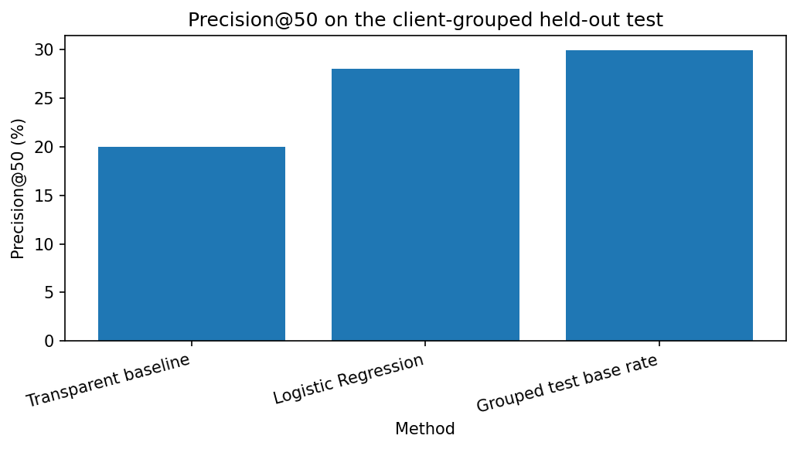
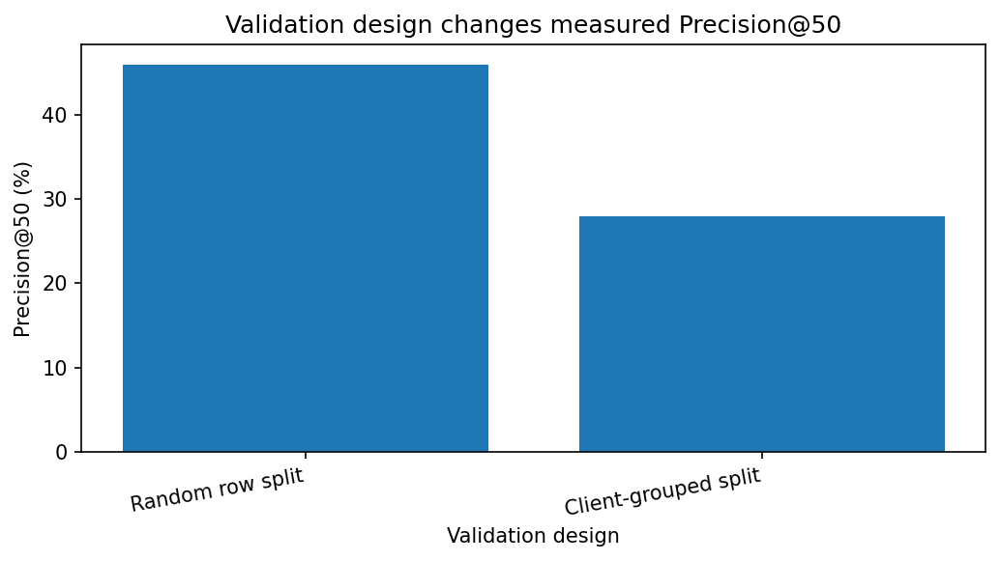
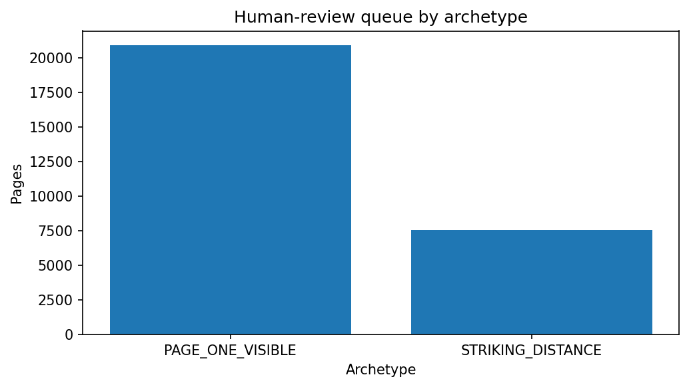

Predictive strength
Logistic Regression reached 28.0% grouped Precision@50, below the 29.9% positive base rate. The result does not establish reliable automatic decline prediction.
FlyRank ML Internship · Machine Learning Capstone
Evaluating whether pre-decision search-performance signals can help prioritize already-visible content for human review without overstating predictive performance.
01
Content teams working across large portfolios need a practical way to decide which already-visible pages deserve human review first.
Using the FlyRank ML Internship warehouse, a 78,835,655-row pseudonymized search-performance release, I aggregated the March 2026 development period into a 145,091-item modeling frame and evaluated pre-decision search signals against a future decline outcome.
A Logistic Regression model achieved 28.0% Precision@50 on a client-grouped held-out test, compared with 20.0% for a transparent rule baseline, while the same test population had a 29.9% positive base rate.
The model therefore improved on the manual baseline but did not provide evidence strong enough to support reliable automated decline prediction, and its measured performance fell from 46.0% to 28.0% when validation changed from random rows to unseen-client grouping.
The final output is a transparent, human-reviewed content action playbook that prioritizes review opportunities with reason codes and explicit limits rather than automatically changing content.
02
Large content portfolios create a prioritization problem: an SEO or editorial team cannot inspect every page with the same depth at the same time. The practical question is therefore not simply whether future decline can be predicted, but whether observed search-performance signals can help decide which already-visible pages deserve review first.
This project evaluates that decision-support problem using a transparent rule and a Logistic Regression ranking model. The model is judged against the baseline on the same held-out client groups so that any measured improvement is separated from the easier case of seeing pages from the same clients during both training and testing.
The goal is deliberately narrower than automatic optimization. A useful result should help a human reviewer decide where to investigate first, explain why a page appears in the queue, and remain explicit about cases where the evidence does not justify an intervention.
03
A pseudonymized production search-performance release, reduced to a March 2026 development frame with a strict separation between pre-decision inputs and future outcomes.
This project uses the FlyRank ML Internship warehouse,
release v20260703.
The main source table is
fact_content_daily_performance, a pseudonymized daily
search-performance table containing
78,835,655 rows across the full warehouse release.
Its original grain is approximately one row per report date,
client, and content item.
The capstone does not train directly on 78 million individual rows. I queried the warehouse remotely and aggregated the relevant March 2026 daily observations into one row per client/content item for modeling and evaluation.
Rows in the full warehouse release
Content items in the final modeling frame
Pre-decision window
March 1–21, 2026
Used to construct every valid model input available at the decision point.
Future outcome window
March 22–31, 2026
Used only to define and evaluate the future decline outcome.
Only information available during the March 1–21 window is used as model input.
| Feature | Window | Role |
|---|---|---|
impressions_21d |
March 1–21 | Pre-decision feature |
clicks_21d |
March 1–21 | Pre-decision feature |
ctr_21d |
March 1–21 | Pre-decision feature |
avg_position_21d |
March 1–21 | Pre-decision feature |
active_days_21d |
March 1–21 | Pre-decision feature |
Rows are restricted to observations where GSC data is available. Content items with zero pre-decision impressions are excluded because the search-performance features used by this lane are not meaningful without observed search visibility.
For model development and validation, a page also needs observations in the future outcome window so that its future outcome can be measured. The resulting modeling frame contains 145,091 content items.
The later action-playbook queue does not require future observations, because an operational recommendation should depend only on information available at the decision point.
Client and content identifiers are pseudonymized and are used only for grouping, joining, deterministic ordering, and validation. They are never model features.
No client names, page URLs, or raw search queries are included in this analysis or public paper.
04
A deliberately simple modeling lane designed around a fixed prediction point, a transparent baseline, client-grouped validation, and an explicit leakage audit.
The decision point is the end of March 21, 2026. All model inputs are therefore computed only from March 1–21. Information from March 22 onward is treated as future outcome data and is never used as a valid model feature.
The task is framed as ranking content for review rather than estimating the causal effect of an intervention.
The future outcome compares average daily search impressions in the March 22–31 window with average daily impressions in the March 1–21 window.
A content item receives
future_decline_target = 1 when its future daily
impression rate is more than 20% lower than its
pre-decision daily rate.
This threshold is an operational target definition for this study; it should not be interpreted as a universal definition of poor content performance.
Before training a model, I created a simple review rule. A page qualifies when:
Qualifying pages are ranked by pre-decision impressions. This provides an interpretable baseline against which the model can be evaluated.
The model is a pipeline containing StandardScaler
followed by LogisticRegression with
max_iter=1000 and random_state=42.
Validation is grouped by client_hash_id using
GroupShuffleSplit. All content belonging to the same
client is kept entirely in either training or test data.
Training rows across 35 clients
Test rows across 9 clients
Clients overlapping between train and test
Primary ranking metric
This design evaluates whether the ranking can transfer to clients that were not represented during model training.
The primary ranking metric is Precision@50, because the practical use case is prioritizing a limited number of pages for human review.
Every final feature was audited against the prediction timeline. All five inputs are available before the March 21 decision point and none is derived from the future label or an existing product-decision flag.
As a sensitivity test, I deliberately added
future_change_pct, a variable that directly contributes
to the future target definition. Grouped Precision@50 then
increased from 28.0% to 100.0%.
It demonstrates how outcome leakage can create apparently perfect performance. The leaky variable was removed, and the final model retains only the five pre-decision features.
05
The model improves on the transparent baseline on the same client-grouped held-out test, but the result remains below the positive base rate of that test population.
On the same client-grouped held-out evaluation, the transparent Week-4 rule achieved 20.0% Precision@50, while Logistic Regression achieved 28.0%.
The model therefore improved on the transparent rule by 8 percentage points.
However, the grouped test set had a 29.9% positive base rate. The model result should therefore not be interpreted as evidence of strong predictive lift across unseen clients.

The model ranks the top 50 pages better than the transparent rule in this evaluation, but the evidence is not strong enough to justify automated decline prediction or automatic content action.
The same Logistic Regression model achieved 46.0% Precision@50 under a random row-level split and 28.0% under the client-grouped split.
The random split contained pages from 40 clients in both training and test data, whereas the grouped split had 0 overlapping clients.
The 18-point difference shows that the random row-level evaluation answered an easier question. The grouped result is the more defensible estimate for the intended use case because it evaluates transfer to clients that were not represented during training.

The final result is mixed rather than purely positive.
Logistic Regression improves on the simple baseline, but the grouped evaluation does not establish reliable automated decline prediction. The practical value therefore comes from using the evidence as a decision-support layer for human review rather than as an automated intervention system.
06
The study supports a narrow decision-support claim. It does not establish causal content effects, universal thresholds, or reliable automated prediction.
Logistic Regression reached 28.0% grouped Precision@50, below the 29.9% positive base rate. The result does not establish reliable automatic decline prediction.
No controlled content-refresh experiment was run. The analysis cannot show that refreshing, rewriting, or changing metadata causes search performance to improve.
The workflow was developed and evaluated using March 2026 data. Client-grouped validation does not prove long-term temporal stability.
The more-than-20% future decline threshold is a practical study definition, not a universal boundary between healthy and unhealthy content.
Precision@50 measures a limited human-review queue. It does not establish performance for recall, revenue, conversions, traffic maximization, or exact future rankings.
Five search-performance features cannot capture factual accuracy, brand importance, legal constraints, commercial value, SERP context, or the editorial purpose of a page.
It cannot claim that a recommended content action will cause rankings, traffic, conversions, or revenue to improve. The output is prioritization evidence for human review, not an automated optimization prescription.
07
The final operational layer prioritizes visible pages for human review using transparent archetypes and reason codes rather than treating the model score as an automatic action signal.
The playbook contains 28,474 pages selected using only information available in the March 1–21 pre-decision window.
Pages are prioritized by existing search visibility, measured through pre-decision impressions. This priority represents review opportunity, not predicted uplift, decline probability, or business value.
PAGE_ONE_VISIBLE20,916 pages
Weighted average position from 4 to below 10
page_one_visible
REVIEW_CLICK_CAPTURE
Search intent, title and description alignment, click capture, and whether the content delivers on the promise shown in search results.
STRIKING_DISTANCE7,558 pages
Weighted average position from 10 to below 20
striking_distance_visible
REVIEW_REFRESH
Freshness, topical coverage, internal linking, and whether the page still aligns with current search intent.

PAGE_ONE_VISIBLE pages and 7,558
STRIKING_DISTANCE pages. The categories explain why a
page appears in the queue; they do not prescribe a mandatory edit.
A reason code explains why a page deserves attention. It does not require a change. After review, the correct decision may still be no action.
No page should be automatically rewritten, published, deleted, unpublished, redirected, or modified solely because of its queue position, archetype, priority score, or model output.
Larger or less reversible changes require stronger evidence and explicit human judgment. The workflow is intentionally designed as decision support rather than autonomous content management.
08
The analysis is organized as a sequence of committed notebooks so that the baseline, model, validation audit, playbook, and capstone can be inspected independently.
The final evaluation uses a fixed random_state=42, a
client-grouped split, pre-decision features from March 1–21, 2026,
and a future outcome window from March 22–31, 2026.
The public repository contains the notebooks, aggregate metric receipts, and reusable figures required to inspect the evidence behind this paper.
Generated row-level queue CSV files remain outside Git by design and can be recreated by rerunning the corresponding notebook.
random_state=42
Client-grouped train/test split with zero client overlap.
March 1–21, 2026.
March 22–31, 2026.
09
Built on the FlyRank ML Internship dataset provided by FlyRank.
The warehouse data used in this project is pseudonymized, and the public analysis does not expose client names, page URLs, or raw search queries.